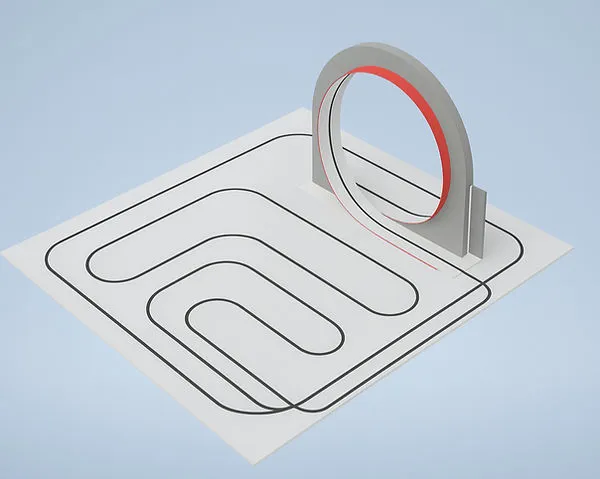

MARATHON TURBO (極速馬拉松)
希臘官方原文規則（English）中文賽事規則
馬拉松渦輪原始內容
規則內容
馬拉松渦輪
年齡組別
青少年組 / 青年組 (12歲以上至18歲 / 國中及高中)
成人組 (18歲以上)
⚠️ 本項目僅設一個級別：
所有類型的機器人同場競技。
🚨 各年齡組別分別進行比賽。
⚠️ 第零條規則 – 零容忍原則與常識
在所有運動項目中，均適用第零條規則，其內容如下：
➤「如果您不確定某件事是否被允許，那麼它很可能是不被允許的。」
所有規則皆基於常識、運動精神以及所有參與者的安全。
任何蓄意曲解、違反規則本意，或試圖利用灰色地帶獲取不公平優勢的行為，將不被容忍，並可能導致隊伍被取消比賽資格。
🎯 目標
本競賽的目標是在精確地從起點到終點跟隨賽道線條的同時，以最短的時間完成賽道。機器人必須配備一個 EDF（電動導管風扇）。
👥 隊伍 – 教練
- 比賽以隊伍為單位參與，而非個人。
- 每隊可由二 (2) 至三 (3) 名隊員組成。
- 每隊必須指定最多一 (1) 名機器人運動員技師。僅允許機器人運動員技師進入準備區或比賽區域。其餘隊員必須留在比賽場地內，但不得排隊等候。➤ 換言之，他們不能佔用額外位置。若隊伍未遵守此規則，將被取消資格。
- 允許隊伍在每次球道嘗試前更換指定的技師，讓所有隊員都有機會積極參與該項目，但此非強制性。
- 所有隊員必須年滿 12 歲以上 (相當於國小四年級或以上)。
- 隊伍教練必須年滿 20 歲。
- 為確保比賽順利進行，教練每註冊 3 支隊伍參加比賽，就必須配備 1 名助理。
- 每隊僅允許使用一台機器人。比賽期間不得更換機器人。
- 隊伍之間不得共用同一台機器人。
- 若隊伍的機器人遇到嚴重的技術問題，經主裁判許可後，僅允許更換微控制器或電子元件。
🤖 機器人運動員 – 機器人類別
比賽根據以下條件分別進行：
- 年齡組別
⚙️ 機器人運動員要求 – 規格
- 機器人運動員必須是自主運作的。
- 機器人必須配備一個 EDF（電動導管風扇）。
- 其最大尺寸必須為 寬 25 公分 x 長 25 公分。
- 重量不超過 1 公斤。
- 機器人運動員的最小高度必須為 5 公分，以便能被計時感測器偵測到，最大高度為 15 公分。
- 機器人運動員將被秤重，並且必須能舒適地放入檢測箱中。
- 檢測箱尺寸為 25 x 25 公分，另有正負二 (2) 公釐的公差。
- 機器人運動員應在不施加壓力的情況下放入檢測箱。
- 機器人運動員不得磨損或損壞賽道，或以任何方式對觀眾構成威脅。
- 機器人運動員必須具備啟動和停止按鈕。
- 機器人運動員必須使用光學感測器區分黑色/白色。
- 隊伍僅能使用控制器進行啟動。
- 建議：使用調變/過濾感測器以避免干擾。
- 不允許使用外部裝置進行循跡（允許使用感測器 + 固定座）。
- 禁止使用氣體（例如氣瓶或任何等效物）來提高速度，因為它們被認為是危險的。
🧪 技術檢查
- 初次技術檢查於比賽當日，在機器人運動員第一次嘗試時進行。
- 在初次檢查期間，將詢問隊伍關於機器人程式的關鍵部分。➤ 隊伍必須打開裝有機器人程式的筆記型電腦。➤ 若從回答中明顯看出隊伍不理解程式，他們將受到相當於其在該項目中所獲時間 +20% 的罰則。
- 技術檢查包括根據上述規格進行的機器人檢查。➤ 若機器人未達要求，將不允許其參賽，並自動取消其在该項目的資格。
- 初次檢查完成後，機器人運動員將被分配一個唯一的 ID 編碼。
- 若隊伍在初次技術檢查時未到場，將導致自動取消比賽資格。
- 在每次嘗試前，助理裁判也會進行二次技術檢查。
- 若在比賽過程中，裁判判定機器人運動員違反或未達規定之規格，裁判有權立即取消其資格。
🏟️ 競賽場地
- 比賽場地於比賽當日才公布。參賽者應考慮以下數據和頁面底部的圖片，並開發可在任何場地上執行的程式碼/演算法。
- 場地為白色，由木材製成。
- 場地大小範圍可從 5 平方公尺到 35 平方公尺。
- 場地是「封閉式」的。
- 「封閉式場地」定義為起點和終點位於場地同一側的場地。
- 一條線貫穿場地，可能形成曲線、直角等。
- 該線條以黑色膠帶標示。
- 線條寬度為 1.8 公分。
- 在交叉點處，機器人運動員必須直行。不允許偏離線條或跟隨交叉路徑。
- 線條（軸向）與場地邊界邊緣的最小距離為 25 公分。
- 轉彎曲線的最小直徑為 10 公分。
- 起點和終點定義為計時感測器所在的位置。
- 除交叉點外，黑色線條兩側各有 15 至 18 公分的空白區域。
- 交叉點的線條相互垂直，至少延伸二十 (20) 公分。
- 將會有環形路線，線條直行（無交叉點）。
- 在比賽開始前，將有測試回合供機器人運動員進行測試，技師將可在特定時間內進入場地，具體時間表將於比賽當日公布。

⏱️ 準備
- 負責該回合的技師將機器人運動員放置在起點，即計時感測器之前。
- 機器人運動員必須處於待命模式，準備好在按下啟動按鈕或啟動遙控器按鈕時立即啟動。
🏁 開始 – 比賽流程
- 機器人運動員的技師在裁判鳴哨後，透過按下機器人運動員上的啟動按鈕或透過控制器來啟動機器人運動員。計時器在機器人運動員通過計時感測器前方時開始計時。
- 機器人運動員必須在接下來的 5 秒內啟動。
- 若機器人運動員在該時間內未啟動，裁判將僅允許重新啟動一次。➤ 這僅適用於第一次嘗試。
- 機器人運動員必須盡快開始移動，跟隨黑色線條。
- 機器人運動員的目標是以最短的時間完成賽道。
- 若機器人運動員超過 3 分鐘，裁判將鳴哨結束該回合，時間記錄為 180 秒（0 分）。
- 機器人運動員（或其任何部分）不允許超出場地邊界。➤ 若發生此情況，該次嘗試視為失敗。
- 允許機器人在行進過程中離開賽道最多 3 秒（例如，在轉彎或跟隨線條時走鋸齒狀路線）。但機器人必須繼續以正確方向跟隨線條。➤ 若機器人完全離開賽道或失去方向，則該次嘗試無效。
- 若賽道大於前一節所述尺寸，預期時間將相應增加。
- 若機器人運動員未能啟動，時間記錄為 180 秒（0）。
🔁 回合 – 嘗試 - 比賽程序
- 該項目的時間為 2 小時。（此時間可能根據參賽人數延長）。在此期間，每位機器人運動員將根據組委會公布的順序，在賽道上進行多次嘗試。
- 若輪到技師時其不在場，則該次嘗試視為放棄，由下一位技師遞補。➤ 錯過回合的技師必須等到所有其他嘗試完成後，才能再次輪到。
- 每次嘗試前，機器人運動員必須通過助理裁判進行的二次技術檢查。
- 裁判記錄機器人運動員每次嘗試的時間。
- 機器人運動員的隊伍有責任確保其在指定時間窗口內進行每次嘗試。
- 在嘗試之間，允許隊伍對其機器人運動員及其程式碼/演算法進行修正，➤ 但不允許進行測試。
❌ 回合結束
在以下情況下，一個回合結束：
- 當機器人運動員通過計時感測器前方時。
- 若機器人運動員超出場地邊界。
- 若機器人運動員偏離線條。
- 若機器人運動員因任何原因停止移動。
- 若機器人運動員超過 3 分鐘的時間限制。
🟥 隊伍取消資格
在以下情況下，隊伍將被取消比賽資格並必須退出：➤ 隊伍的成績將不予計算，也不會出現在官方比賽排名中。
- 若機器人運動員不符合運動規則中定義的規格，且隊伍拒絕進行必要的調整。
- 若任何技師行為不當或不尊重他人，使用侮辱性語言、挑釁，或對其他參與者或裁判進行口頭（或其他方式）攻擊。
- 若發現機器人運動員並非自主運作，而是透過藍牙、Wi-Fi 或任何類似技術進行遠端控制。
✅ 允許 / ❌ 禁止
✅ 允許：
- 僅使用濕清潔布或清潔液和紙巾清潔機器人運動員的車輪。
- 在開放類別中，僅使用遙控器啟動機器人。
- 在嘗試之間進行維修、清潔、重新編程。
❌ 禁止：
- 機器人運動員使用可能傷害其他參賽者的零件或組件。
- 使用黏著劑增加牽引力，包括：
➤ 使用膠帶清潔車輪，可能導致殘留膠。
➤ 使用吸盤。
➤ 任何違反規定的增加附著力方法。
- 與場地接觸的輪胎或機器人部件，必須不能夠舉起並承載標準 A4 紙（80 g/m²）超過兩 (2) 秒鐘。
- 使用氣體（任何形式，例如氣瓶）來提高速度。
- 機器人在比賽中碎裂或散落成碎片。➤ 即使完成比賽，時間也記錄為 180 秒（0）。
- 透過以下方式將機器人連接到外部電子設備（例如電腦、智慧型手機、平板電腦）：
➤ 藍牙（透過控制器啟動/停止除外）。➤ Wi-Fi ➤ 任何其他無線技術
- 繪製賽道地圖。
- 在嘗試期間觸碰機器人運動員。
- 在嘗試期間（機械式或主動式）擴展機器人的尺寸。
- 任何其他禁止事項列於「機器人運動員要求與規格」章節中。
🏆 獲勝者
在該項目結束時，將分別為每個年齡組別宣布獲勝者：
🥇 第一名 🥈 第二名 🥉 第三名
🏁 排名根據機器人運動員所達成的最短時間決定。